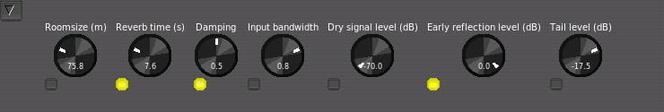
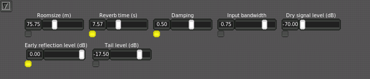
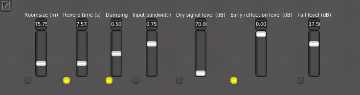

1. User Manual
1.1. The Mixer
 |
The Non-Mixer is a stand-alone audio mixer, utilizing JACK as an audio subsystem. At the time of writing, the architecture of Non-Mixer is unique. By making the mixer stand-alone, concepts such as busses, sends, and inserts are eliminated, as the same goals can be achieved by simply adding more strips to the mixer.
Start by creating a new project (menu item Project/New).
 |
After the project has been created. Hit a or choose Mixer/Add Strip from the menu to add a new strip to the mixer.
1.1.1. Display Options
The display options, found in the Options/Display submenu may be adjusted to suit your needs. Set the color scheme, widget style, and other graphic options to your liking. These options are global and affect all projects.
1.1.2. Mixer Strips
 |
Each mixer strip has a name and color, each of which may be defined by the user. Names, but not colors, must be unique. In addition, each strip has controls to move it left or right (the arrows) in the display and to remove it entirely (the 'X').
Strips start out in narrow mode, with the fader view enabled. Click the desired button to toggle the mode or view.
The fader view comprises a large gain control and digital peak meter indicator. These are automatically connected to the default gain and meter modules of the strip's signal chain.
To see how an audio signal traveling through this strip will be processed, switch to its signal view.
1.1.2.1. Navigation
A strip is focused when you click on it. Focus can be moved among strips with the Tab and Shift-Tab keys.
1.1.2.2. Control
The focused strip can be moved in the display order via the [ and ] keys. Delete removes a strip (with confirmation dialog). n and w set the focused strip's width to narrow or wide, respectively, and f and s switch between fader and signal views. The strip's context menu can be invoked without the mouse by hitting the Menu key (assuming your keyboard has one).
1.1.2.3. Signal Chain
The signal chain view of a mixer strip provides a way to view and manipulate the signal processing of a mixer strip.
1.1.2.3.1. Modules
 |
All signal processing in Non Mixer occurs in Modules. Modules are signal processing abstractions providing ports for audio and control I/O and, in addition, some simple user interface. Sink and source modules carry audio out of and into JACK.
Modules are displayed as named blocks. Some modules (e.g. the Meter module) may have additional GUI components.
Each module has zero or more audio I/O ports and zero or more control ports. Audio routing between modules is handled automatically. Modules with mono audio configurations (one channel in, one channel out) can be automatically adjusted to support any number of discrete channels. Modules with more (related) channels, however, introduce restrictions on the order in which modules can be chained.
An indicator in the upper left-hand corner of each module block indicates whether the module has any parameters bound to controls.
Non Mixer has several built-in modules. They are:
- JACK
- Performs JACK I/O
- Gain
- Applies gain in dB
- Meter
- Digital Peak Meter
- Mono Pan
- Performs intensity panning of a mono signal into a stereo signal.
- Plugin
- Hosts a LADSPA plugin
1.1.2.3.1.1. OSC Control
The input parameters of all modules are controllable via OSC, regardless of whether the parameter is set as controllable.
The format of the automatically generated OSC path names is as follows:
/strip/[STRIP_NAME]/[MODULE_NAME]/[PARAMETER_NAME] |
The UDP port that the OSC server binds to can be set by providing the --osc-port command-line option. Without this option, a random port will be bound automatically (the exact OSC URL will always be printed to the console as a line beginning with "OSC: ").
The default path accepts a float value between 0.0 and 1.0 (a Control Voltage like signal) which will be automatically scaled to the allowable range of the control.
A path ending in /unscaled is also available, which accepts exact values, which will be clamped to the allowable range. For example:
/strip/[STRIP_NAME]/[MODULE_NAME]/[PARAMETER_NAME]/unscaled |
If same module/plugin is used twice in a signal chain (e.g. multiple Gain stages), then a position dependent sequence number will be appended to the module name. For example, a path might look like the following:
/mixer/strip/Foo/control/Gain.1/Gain_(dB) |
For the second instance of the Gain module on the strip named 'Foo'.
Non-DAW accesses these same signals via a more advanced signal routing layer on top of OSC. Any module parameter is easily controlled via Control Sequences in Non-DAW without the need to specify an OSC URL.
1.1.2.3.1.2. Manipulation
Left-clicking on a module brings up a Module Parameter Editor window for the selected module.
Right-clicking on a module brings up a context menu allowing you manipulate the module, as well as to pick a new module to insert before the selected one in the chain.
Middle-clicking on a module toggles its activation state (the audio signal will bypass inactive modules).
Control+Right-clicking on a module causes it to be removed from the chain (modules added by default cannot be removed).
The focused module may also be controlled via the keyboard. Menu brings up the context menu for the focused module. Space opens the module parameter editor, b toggles the bypassed state, and Delete removes the module from the chain (without confirmation!). Control-X, Control-C and Control-V, cut, copy, and paste modules, respectively. Modules may be copied within or across chain boundaries. The normal module I/O constraints also apply to pasted modules.
1.1.2.3.1.3. Module Parameter Editor
|  |
The Module Parameter Editor is used to alter the values of a module's parameters, and in addition, to bind its parameters to controls. A menu button in the upper left-hand corner allows you to select between knob, vertical slider and horizontal slider controls.
|  |
|  |
Underneath each control is a bind button. Clicking adds a new control to the chain's Controls view and binds it to the parameter in question. For simplicity, only one control at a time may be bound to a given parameter.
1.1.2.3.1.4. Controls
 |
The control view of a chain groups together all of the controls bound to parameters of modules in that chain. The default mode of controls is Manual. Right click on a control to bring up a menu which will allow you to select one of the available control I/O methods to use. When Control Voltage (CV) is selected, a CV input port will be created on the containing mixer strip's JACK client. The control will now accept values from that input. A control bound and configured in this way can then be connected to the output of a Non-DAW control sequence using your favorite connection manager.
| NOTE: All knob and slider controls respond to mousewheel events. Hold down the `Ctrl` key while scrolling the mousewheel to achieve finer resolution. |
The control voltage concept should be familiar to anyone who has experience with analog modular synthesizers. MIDI, while having definite advantages in many respects, multiplexes control data in such a way as to make connecting one MIDI control to a parameter involve a significant inconvenience, usually requiring the adjustment of settings on both ends of the connection in order to separate the control data streams.
Control Voltages, on the other hand, provide a simple 1:1 source to sink relationship and offer much higher resolution, both in time and value, than can be natively expressed through MIDI. The chief advantage of CV in the context of Non-DAW is the ease with which an control sequence can be connected to a mixer module parameter. If you have a MIDI controller that you'd like to use to control parameters of Non-Mixer, consider jm2cv, a JACK MIDI to Control Voltage daemon which was written by Peter Nelson specifically for use with Non-Mixer. jm2cv can be acquired by:
git clone git://fuzzle.org/jm2cv.git |
| NOTE: The use of Control Signals (OSC) should be preferred for types of parameter automation, as LADSPA plugins are incapable of processing Control Voltage signals at full resolution anyway. |
1.1.3. Projects
A Non-Mixer project is a directory where Non-Mixer keeps the strip settings, project specific settings, and some meta-data. A project is completely self-contained. You can rename a project as simply as:
$ mv Project-A Project-B |
1.1.3.1. JACK I/O
Each mixer strip is presented as a separate JACK "client". This helps to avoid the necessity of internally duplicating JACK's routing logic and, with JACK2, permits the possibility of parallel execution of mixer strip signal chains.
The JACK client name of each strip will correspond to the name of the strip.
| NOTE: The JACK API makes implementing this far more difficult and kludgey than it should have to be. Please petition your local JACK developer to accept jack_client_set_name() into the API. |
 |